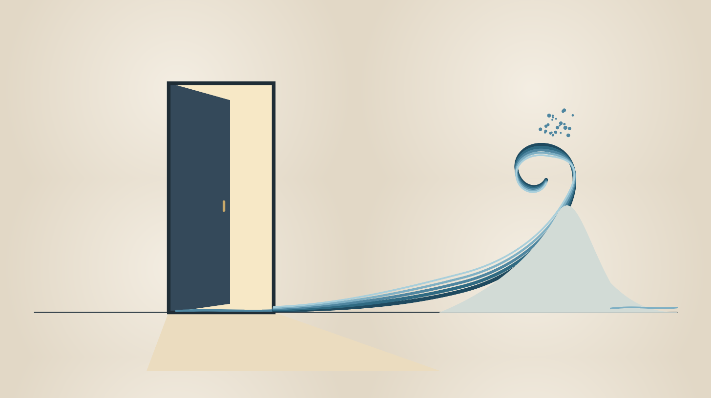

The Illusion of Optimization
The lake, the watershed, the wave

A longer, reworked version of a three-part series I first published on LinkedIn.
A few months ago I wrote that generative AI didn't destroy education, it only destroyed a transaction (the mere need for a title to access the market hierarchy) and that the future belongs to the people who can stand the friction of learning, whatever this means. Then the obvious question came back to bite me: how do you stand friction when everything around you is designed to remove it? And what is friction even for? What is learning? Is every friction desirable?
I don't have a clean answer, nor a dirty one, maybe just something messy and still open to work; like water, always working. So this article goes in three parts and then a correction (which will come in the next article, not in this one, first lie): a lake inside one head, then the watershed between all of us, then a wave. There I correct myself, because if I'm going to praise being corrected, I'd better accept it myself, no? At the end of the day, any argument, by construction, will be incomplete, and facing that incompleteness is part of re-learning what optimization is.
I. The Unbroken Bubble and the Lie of the Genie
Seen from close, a still lake and the open sea look exactly the same. The only difference is the edge and the boundaries that surround them. Most lakes you can hold whole with your eyes (with exceptions such as Lake Michigan which looks like a sea almost ;) ). The sea always goes further than you can see. And that not knowing, whether you're looking at the whole thing or only a piece of it, is where every real question starts, where our ignorance gives us the chance to learn.
Imagine now ourselves resting at the shore of Lake Michigan, at the top of the Sleeping Bear Dunes, staring at the water. It looks still, relaxed, so if one gets close enough to the surface, one can see on the glassy water, acting like a mirror, something similar to one's own face, especially with the clarity with which the water receives the swimmers in Lake Michigan. Imagine again, we then raise our head and, although we cannot see it from here, we know that the lake is bounded or at least has a shore across, so nothing waits on the other side that we don't already know, nothing to be imagined, as clear as the reflection the glassy water gave back, as if we could see from the shore what the other side "hides". We also realize for the first time that it's still, that's why in the first place we could see ourselves, but we were mesmerized by the result rather than the process, but that means nothing is disturbing the water on the lake, meaning there is no space for the uncertainty of a blow-up (sorry for the mathematical excursion) or of something that would break the portrait of yourself on the glassy water, at least that we know of for now. Re-centering the metaphor, nothing reaches you. That's the trick of perfection. You didn't understand the sea, even less the water; you just sealed a little water and let it be your mirror. What is flawless has only ever met itself, its own reflection, its own beliefs.
Personally, I think we seal the water for ourselves in two ways, out of fear or necessity; but I'm still not clear about the relation between the latter and the former.
The first one I call the Genie. For example, you ask the "machine" (AI, your local computer, a dictionary, your favorite book…) and it hands you a "perfect" answer. It throws a loaded die and gives you the most probable sentence, the consensus dressed up as certainty. That's the lie of the Genie: a lake that calls itself the sea, a book that claims to know the meaning of words, a story that guides you and your morals, a "perfect" technique that we mistake for knowledge. Slowly you stop wanting to know and start wanting the feeling of knowing, which comes faster and costs you nothing compared to the cost of living with the uncertainty of not knowing. I say this as someone who builds with these tools every day, so I'm not pointing from the outside, rather reminding myself of what I know and what I don't know.
The second is the Bubble. You don't let anything move the water, so the surface just repeats you, your reflection, your own echo. You surround yourself with people who believe in the same book, who define the words as you do, that program in language as you do. Everything you say comes back in your own voice. It sings your note back to you, calls that listening, and then tells you that you never listened if by luck your next thought does not resonate with its established beliefs. Inside, you're the main character: always confirmed, never touched, in love with your reflection, validated and believing you are verified; of course as long as you are a member of the bubble.
Both are the same loss: sealed water gives back only your own face, and that is not peace. A life that lets nothing touch it does not grow calm, it grows lonely. So how do you stand friction? You stop sealing the water, and you let another mind throw a stone into your water.
II. The Kind Dam
Almost nobody stills their water alone. We do it for each other, and most of the time out of kindness or support, which is what makes it so hard to see or even to understand. I guess it glimpses at the lies we are not willing to admit.
We are not separate lakes, even less islands. What connects the water around Mackinac Island and the one at Traverse City's bay is the current that flows across the lake. Being in the current means being in contact, even if it is from a distance, carried by others and corrected by them, sharing the same water, remembering where we belong. Someone who can tell you that you're wrong (the rightness is important too but we can agree it hurts less, if it does at all) is holding you to reality and to themselves at the same time. Cut that, and you lose both: the person, and the ground under your feet. Coming back to the examples we mentioned in Part 1, all that changes is the certainty with which we approach the Genie in a sense, if we are willing to not only be convinced by the "machine" but also doubt the answer it offers, even if that only triggers an internal debate. Doubting if the resonance of the bubble is just validating or verifying who we are, doubting if the book we read means what we thought, doubting if the words we use mean what they meant before.
Teaching, the thing that corrects, guides or reminds us who and where we are, can get stuck between two dams. On one side there's facilitating, which only smooths or reassures what we already believed: hold space, validate every voice, correct nobody, and call it respect. This action needs to leave aside verification, so one can mirror what the other wants to see or hear. Basically a practice of sustaining the bubble so it resonates with our beliefs. It feels kind. It leaves us alone in warm, still water. On the other side there's the mentor, who is always right or at least appears so, because the mentoring implies a success which the one mentored wants to achieve, and then it's not the sea correcting you, it's a person you measure yourself against, the shore pretending to be the deep, Mackinac Island pretending to be in the sea, the Genie, the "machine", the book which rules our life. A "real" teacher is neither. He throws the stone and lets the water prove you wrong, not himself, and he can be wrong too (in defense of modern AI, this last property is what makes that "machine" less of the latter and more of a teacher, one of the real ones, but both in the facilitator and mentor sense).
My own work field (science, mathematics first and now fluid mechanics), which was built to throw stones, learned to build dams as well. At a fluids conference, take the risk of asking in between the presentations what pressure is, or more open even, what pressure is for that scientist in particular, and people will laugh (which is my favorite reaction) or frustration will emerge due to the "triviality" of the doubt, as if the question was closed a long time ago, and the answer was as obvious as a proof about the Cantor set ;), of course only when one chooses to believe and trust a set of axioms, but that we leave for another time. But let's come back to pressure; push water in one place and all of it moves as one, and that is how it stays one thing. For me that's not a constraint or a footnote. It's the water talking to itself. It's communication, and we keep calling it trivial. The moment we decide we already know what something is, we stop listening to it or to those who bring the message of the unknown back to us.
This scheme, the dam we build out of comfort, is old, some would say even ancient, and most of the time it converges in a similar manner, a silence that echoes from the past, the silence of a forgotten bond. The bond that holds a people together is made in hardship and drained by comfort, a comfort scheme that separates the known from the unknown, the mentor from the mentored one, the teacher from the student. Of course hardship needs to be in its right measure or, as the Swedes would say, lagom, but if that equilibrium is not found the practitioners of the scheme become too soft to hold the scheme and themselves. Ibn Khaldun, in the fourteenth century, called that bond asabiyyah, and thought comfort could undo what the practitioners tried to build in about three generations. It happens inside one life too. Cut off in the middle of plenty, we fall apart, because the structure does not hold up. And strangely, in a country at war, when the structure crumbles, when shared hardship pushes people back into the current, even suicide goes down, and the reasons or motivations for the latter are still not clear, it is just a bit more clear that it is an event that emerges most when the scheme is breaking down, and interestingly enough that is not the case when martial events occur. Durkheim saw it in the numbers more than a hundred years ago. The loneliness everybody is measuring now is exactly that, seen from inside, inside an apparently strong and rigid scheme which truly is losing itself: a landscape of private still ponds, each one warm, each one sealed, each one alone, because they forgot they are part of a bigger sea, because the noise that connected us became silence again.
So the way out is not more comfort, second lie (some comfort, lagom, we do need), and neither a bigger pond, because a bigger pond is still a pond. It's the current, the flow, the constant change and readaptation. The share of the hardship, sharing the responsibilities of keeping the scheme moving, keeping close everything, especially those that keep us in check, those that keep verifying that the goal we suffer for is still shared. It's the friend who still tells you that you're wrong, which is more common, but also that you are right when others would not. "Real" kindness is not only the smooth surface, but also it's being willing to be the stone in someone's water, and then staying, so the ripples carry them instead of drowning them. Maybe aiming to be as kind as Bamse when he gets angry, knowing that regardless of the pain we produce, we can always extend a hand to help the harmed one, and maybe that's only my bias, understanding the way Bamse fights as unrealistic, a utopia and trying to translate the great metaphor into an incomplete scheme.
But even this still draws a line between your water and mine.
III. The Wave
There's one pond left, and it's the one we defend harder than any other, because we call it me or ourselves, but not all, because if so, it would not be from anyone or in other words it would be for everyone.
We spend our life keeping it perfect, trying to keep in control all the changes we adopt, sealed, ideally still, ours. We guard the edges, as if those defined us, and defend the shape against anything that could change it, because that would mean sacrificing for the other, which we like less and less in these postmodern times. And that, my dear friends, is the deepest still water one can face, because it always gives back something we learned to call "me".
But let's re-learn from the wave, let's imagine it, just once at least, properly. A wave is real, at least in our minds for now, it has a shape, a height, a moment; you can point at it, name it, watch it coming, but a wave owns nothing, like we barely own our thoughts ;). It doesn't carry its water with it, it just moves it. The water it's made of right now was somewhere else a second ago, and will be somewhere else a second from now. The water only passes through. One does not need to imagine it much, one can leave the world of ideas and visit the beach and go for a swim. Along that swim one will feel the wave and, as it is not separate from the sea, one will feel the latter too, but neither of them is the whole sea either. They are just shapes the sea holds for a while.
That's us. Not a thing with edges, but a pattern the world/universe is making, a knot where a thousand relations cross, held for a life and then let go. At the end of the day the wave comes back to the sea as the lake also does, but we cannot confuse either with the sea because they share the water. Buber said it as simply as it can be said: in the beginning is the relation, and one could add that at the end that relation is all there is. There was never a separate self sealed in its own water, even if it seemed so for a short period of time, never a solid thing to defend, and never nothing either, just different things for a period, that will eventually return to the same water; the only doubt is just when. So let's remember the pond we call us is empty of any water of our own, and is "real" because of that, because do we own what we have? Or does it own us for what it does? Let's remember that we are just a wave the sea kept making in the shape of our name, a name again that as much as it is ours, it is not.
Finally, when the water flows freely, without fear of the unknown or imposing the road, when we finally understand friction as the door to verification and understand validation as just an echo, we look down again from the Sleeping Bear Dunes, as we did the first time and we don't see our faces anymore, not because it is not there, just because we do not look for it, we look for something else, we see through it, we see in, we finally see the water as it is. We no longer take the resonance of the bubbles and their reflections as ourselves, we do not take the words we read as ours, not even the words we write, because maybe we come back to them tomorrow and have the pleasure of realizing that we were wrong, whatever that means.
I wrote this from inside the water of my thoughts, still failing to stay in, hoping the words teach me as much as anyone reading them, trying not to be a mirror but rather transparent, trying to stop being me, for us, as we will always be.
Inspiration
- Heraclitus: the flux is governed by measure, the Logos.
- Robert A. Bjork: "desirable difficulties".
- Ibn Khaldun (Muqaddimah): asabiyyah, the bond forged in hardship and drained by comfort.
- Émile Durkheim (Le Suicide): connection lowers suicide; isolation amid plenty raises it.
- U.S. Surgeon General (2023): the epidemic of loneliness.
- On pressure: that the geometry of turbulence is the pressure was handed to me at TSFP, Heidelberg; that it is communication is my own.
- Martin Buber (I and Thou): in the beginning is the relation.
- Carlo Rovelli: a thing has no properties on its own, only in relation to others.
- Nagarjuna (Madhyamaka): the middle way, empty of a separate self and real by dependence.
- Rumi (trans. Coleman Barks): the flood that clears the stream, until you see in.
- Erasmus of Rotterdam: In Praise of Folly.
Thanks to Davide Procacci, Pol Suárez Morales, Enrico Foglia, Sergio Hoyas, Eduardo Terrés Caballero, Natalia Quintana Barco, Erik Sieburgh, Anna Wisjt, Francesco Mario D'Afiero and Emelie Saga Stark for keeping the water moving.
Thanks to everyone for the friction and the help!
This is where I'll keep writing, about this and about what we're building at Mama's Brain.